Developing a semester-length course for a traditional classroom environment is a very different proposition from developing a self-paced, curriculum of interactive learning object for workforce training. While the overarching instructional strategies and models may be the same, the tactics that are used to act on those strategies vary widely. example, a traditional, course may require extensive preparation that the development of a course outline, a syllabus, a schedule, lecture notes, assessments, visual presentation aids, and other support materials.
However, a traditional classroom course require the very precise scripting of every word of instruction to be delivered to students. Because the instruction within a self-paced learning object is computer facilitated, with no external human there is an extra burden on the development  to precisely capture the subject matter expertise of the academic authority. In this self-paced, technologically-mediated construct, the computer functions in an in loco professor capacity for the student.
{{index+1}}. {{currentQuestion}}
Incorrect. Please try again.
Correct.